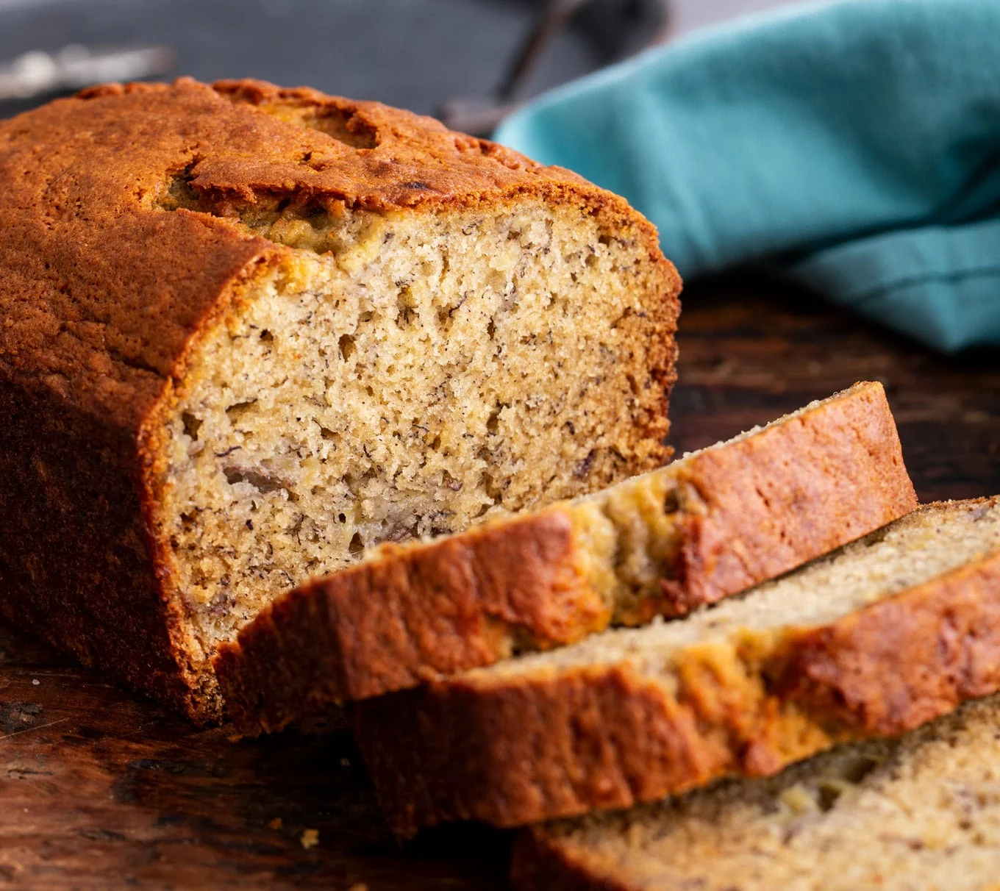

Prep: 15 Mins.
Cook: 1hr 5mins
Total: 1hr 20mins
Servings: 1 loaf
Banana Bread
Ingredients
- 2-cups all-purpose flower
- 1 tsp baking soda
- 1/4 tsp salt
- 1/2 cup of butter
- 3/4 cup brown sugar
- 2 eggs, beaten
- 2 1/3 cups mashed overripe bananas.
Directions
Preheat oven to 350 Degrees (175c). Lightly grease a 9x5-inch loaf pan.
In a large bowl, combine flour, baking soda, and salt. In a separate bowl, cream together butter and brown sugar.
Stir in eggs and mashed bananas until well blended.
Stir banana mixture into flour mixture; stir just to moisten. Pour butter into the prepared loaf pan.
Bake in preheated oven for 60-65 minutes, until a toothpick inserted into the center of a loaf comes out clean.
Let bread cool in pan for 10 minutes. , then turn out onto a wire rack.